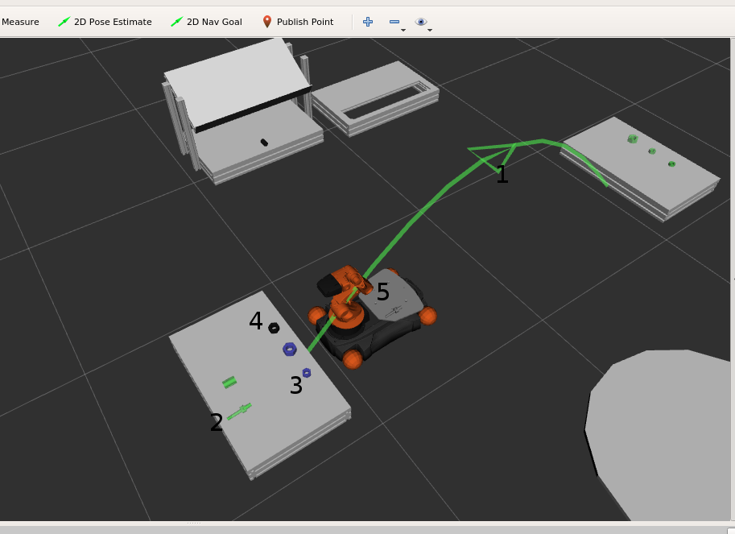
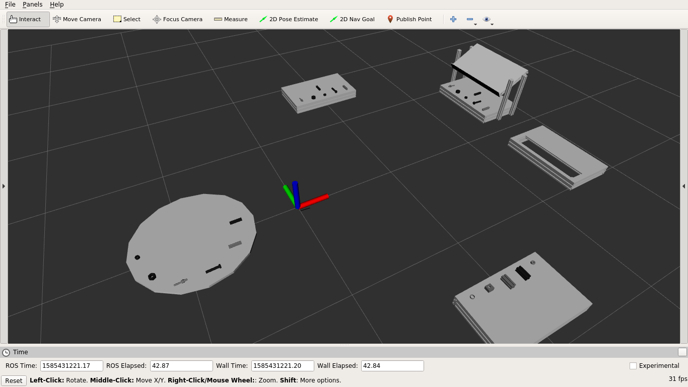

Planning Visualisation¶
Visualise the planning related knowledge in RViz.
Knowledge base and plan visualised
move_baseactions according to current plan- Unfinished goals (object that needs to be placed) [Green]
- Objects that need to be picked according to current plan [Blue]
- Normal objects that need not be interacted with
- Objects stored on robot’s platform
Knowledge base visualised without plan with fake objects
Configuration¶
Configuration file for generating a marker from a 3D model is defined as follows
m20:
file_name: 'm20.stl'
scale: 0.001
color:
r: 0.1
g: 0.1
b: 0.1
offset:
x: 0.0
y: 0.0
z: 0.0
roll: 0.0
pitch: -90.0
yaw: 180.0
The marker should be created at the bottom center of the given position. (See
mir_planning_visualisation.utils.Utils.get_marker_from_obj_name_and_pos() for more info)
Test¶
roscore
roslaunch mir_planning_core task_planning_components.launch
roslaunch mir_task_planning upload_problem.launch
rosrun mir_planner_executor planner_executor_mockup
roslaunch mir_planning_visualisation test_planning_visualiser.launch
roslaunch mir_planning_core task_planning_sm.launch